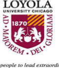

| Current | Professor | Beijing Foreign Studies University | |
| Engaged in International Finance, Doing Business in China, Business Ethics and Cross-cultural Management Designated ‘High-End’ Foreign Expert by Beijing Municipal Government | |||
| Current | Adjunct | Temple University Law School at Tsinghua (Beijing) | |
| US Civil Procedure (LLM level) to Chinese attorneys | |||
| Current | Visiting | Aalto University (f/k/a Helsinki School of Economics) | |
| Visiting faculty in program of China as an Emerging Market, a comprehensive survey course of China with emphasis on doing business in PRC | |||
| 2011 - 12 | Adjunct | Kellogg School of Management | |
| Adjunct Professor in Global Initiatives in Management with focus on China; faculty advisor for MBA student tour of People’s Republic (March 2012) | |||
| 2011 - 12 | Adjunct | IIT Chicago Kent College of Law | |
| Seconded to Hangzhou (2011) and Beijing (2013) as professor of US Business Entities and Corporate Law for Chinese lawyers enrolled in Kent International Law LLM program | |||
| Current | Guest Professor | Beijing Language & Culture University (BLCU) (from 2007) | |
| Topical lectures with subject matter typically related to international business, outbound Chinese investment, Chinese banking institution emergence worldwide, and US law following the 2008 presidential election | |||
|  | 2010 - 13 | Presenter | Loyola University – Chicago |
| Created course offering entitled Discussions on Modern China for Loyola’s Continuing Education Program which received highest ratings | |||
| 2007 - 2008 | Consultant | Webster University – St Louis MO | |
| Advised on the successful creation of Confucius Institute located at the Old Post Office in St Louis. The Confucius Institution program was created by the Chinese Ministry of Education (Hanban) and provides Chinese language and culture training through partner universities throughout the world. | |||
| 2006 - 2007 | Instructor | University of Chicago – Graham School | |
| Developed, together with Peking University’s International MBA group, two tours of China. Responsible for the US side briefings and various content during China visit. | |||
| 2004 - 2005 | Visiting Prof / Exec Residence |
University Illinois Springfield | |
| Assisted Dean of the Business School in analyzing international programs. Organized and lead China tour for Executive MBA students. | |||